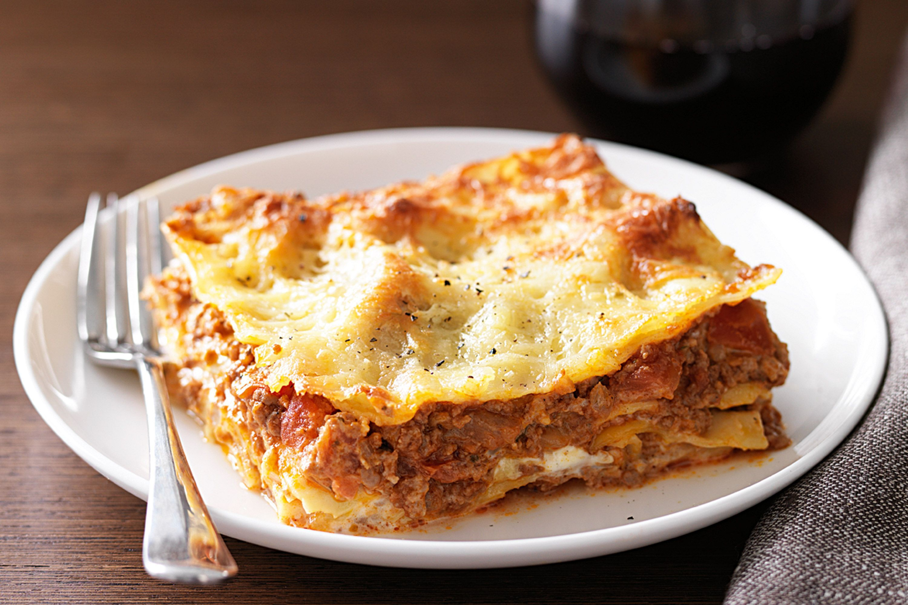

Beef lasagne

Beef lasagne
Beef lasagne is a flat and expanded pasta sheet, traditionally made in Italy with
Parmigiano-Reggiano (Parmesan cheese), Béchamel sauce (white sauce), and ragù
(a meat-based sauce).
Ingredients
- 500g beef
- 6 lasagne sheets
- Ragù sauce
- Béchamel sauce
- Parmesan cheese
Steps
- Sauté beef over high heat and mix beef with ragù sauce
- Put meat mixed with sauce in baking tray and cover it with lasagne sheets.
- After every meat layer put béchamel sauce.
- When tray is filled bake it on 200 degrees celcius for 40 mins.
- Finish it by putting parmesan cheese on top.